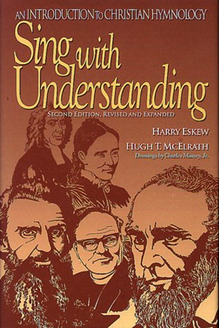
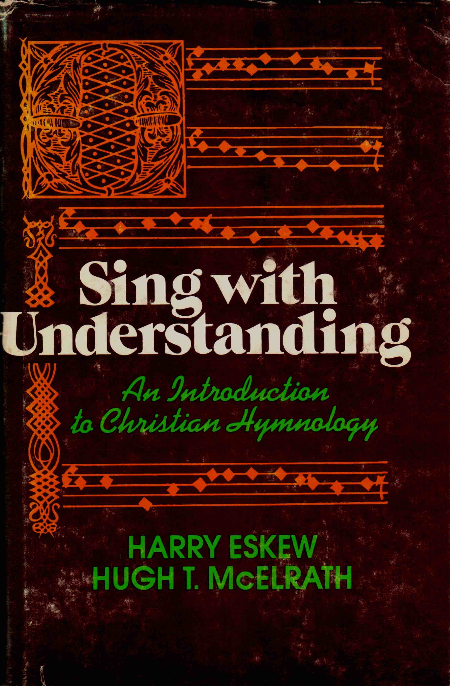

|
|
【我們全意讚美君王】 |
|
We praise you with our minds, O Lord, Verse 2 Verse 3
|
|
|
We Praise Thee With Our Minds, O Lord
|
|
|
|
|


https://youtu.be/Rhay12kDU_k - "We Praise Thee With Our Minds" - Hymn 642
https://youtu.be/aXS2ARkH1Kw -
https://youtu.be/Akvp6mCXR84
| Text: | We Praise You with Our Minds |
| Author: | Hugh T. McElrath |
| Tune: | CLONMEL |
| Arranger: | William J. Reynolds |
Tune Information
| Title: | CLONMEL |
| Arranger: | William Jensen Reynolds (1952) |
| Meter: | 8.6.8.6 |
| Incipit: | 51217 65565 43132 |
| Key: | E♭ Major |
| Source: | Irish Melody |
| Copyright: | Arr. © 1952. Renewal 1980 Broadman Press |
| Short Name: | William Jensen Reynolds |
| Full Name: | Reynolds, William Jensen |
| Birth Year: | 1920 |
| Death Year: | 2009 |

Longtime music prof Hugh McElrath dies
By Garrett E. Wishall, posted May 15, 2008 in
LOUISVILLE, Ky. (BP)–Hugh T. McElrath, longtime music professor at
Southern Baptist Theological Seminary, died May 8 at his winter home in Penney
Farms, Fla.
McElrath, 86, retired from Southern in 1992 as the V.V. Cooke Professor of
Church Music, having served at the seminary since 1948 when he began as a voice
instructor. After retiring, McElrath continued teaching hymnology classes
through 1998.
A funeral service for McElrath was held in Southern’s Alumni Memorial Chapel in
Louisville, Ky., on May 14. Various family members, friends and former
colleagues spoke warmly of McElrath, celebrating his ministry as a gift to the
church and his life as one well-lived.
SBTS President R. Albert Mohler Jr. recalled McElrath’s crucial and enduring
contribution to the seminary: its music school.
“Dr. McElrath was in the choir that dedicated this chapel in the very year he
was elected to the faculty,” Mohler said. “There is no school of church music at
The Southern Baptist Theological Seminary without the history of Hugh Thomas
McElrath. He and his dear wife Ruth were among the first students enrolled in
this school.
“He was on its very first faculty, elected in 1949 before the trustees ever even
knew what to call a professor of church music. The title would have to wait, but
he did not wait to teach and from 1949 through many successive decades he
invested in countless lives on this campus.”
Wayne Ward, who served alongside McElrath on Southern’s faculty for many years,
pointed out that McElrath was as renowned for his speaking and preaching as for
his music during his early years on the faculty. One of McElrath’s greatest
gifts was the uncommon strength and unforgettable tone of his voice, Ward said.
“We had no electronic amplification when we met in the old chapel,” Ward
recounted. “Without amplification he would stand up and speak or lead and his
voice would bounce off the walls and rattle the windows. He had a magnificent
voice and he used it to carry this Gospel all around the planet. That voice is
still going and ringing.”
In 1992, McElrath became the first music professor to receive Southern’s Findley
B. and Louvenia Edge Award for Teaching Excellence, the seminary’s highest
teaching honor.
From 1987-1989, McElrath served as president of the Southern Baptist Church
Music Conference. He was a member of the theology/doctrine committee for the
1991 Baptist Hymnal and also served as editor of the handbook accompanying the
hymnal.
McElrath served as minister of music at three Louisville churches, including 22
years at Beechwood Baptist Church and also at Victory Memorial Baptist Church
and Hazelwood Baptist Church.
McElrath co-authored the music textbook “Singing With Understanding” with Harry
Eskew, longtime music professor at New Orleans Baptist Theological Seminary.
McElrath also wrote several hymns, including “We Praise You With Our Minds, O
Lord.”
McElrath earned bachelor of sacred music and master of sacred music degrees from
Southern in 1947 and 1948, respectively. In 1967, he completed a Ph.D. in
musicology from the Eastman School of Music at the University of Rochester.
Born in Murray, Ky., McElrath was the eldest of four children. In 1943, he
graduated with a bachelor of arts degree from Murray State University with an
English major and minors in history, French, education and music.
A work celebrating McElrath’s life and contributions to church music, “Minds and
Hearts in Praise of God: Hymns and Essays in Church Music in Honor of Hugh T.
McElrath,” was published in December 2006.
He is survived by his wife and three children, Hugh Donald McElrath, Douglas
McElrath and Margaret Partridge.
–30–
Garrett E. Wishall is a writer for Southern Baptist Theological Seminary.
ABOUT THE AUTHOR
GARRETT E. WISHALL
https://www.baptistpress.com/resource-library/news/longtime-music-prof-hugh-mcelrath-dies/


Hymnology in the Service of the Church
Essays in Honor of Harry Eskew